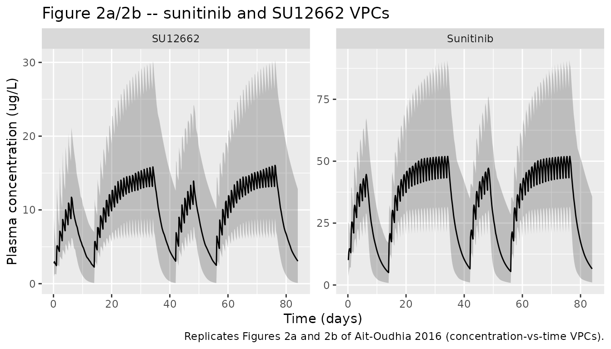
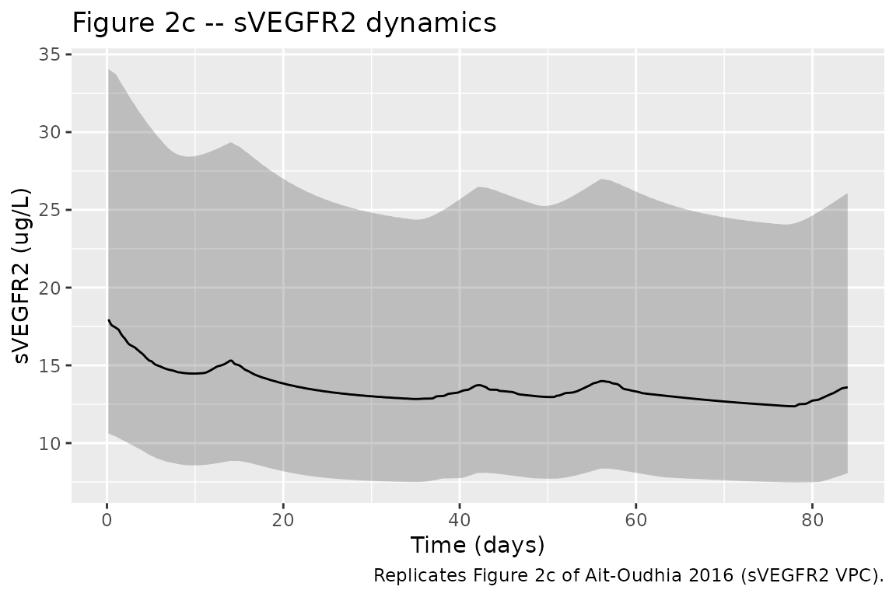
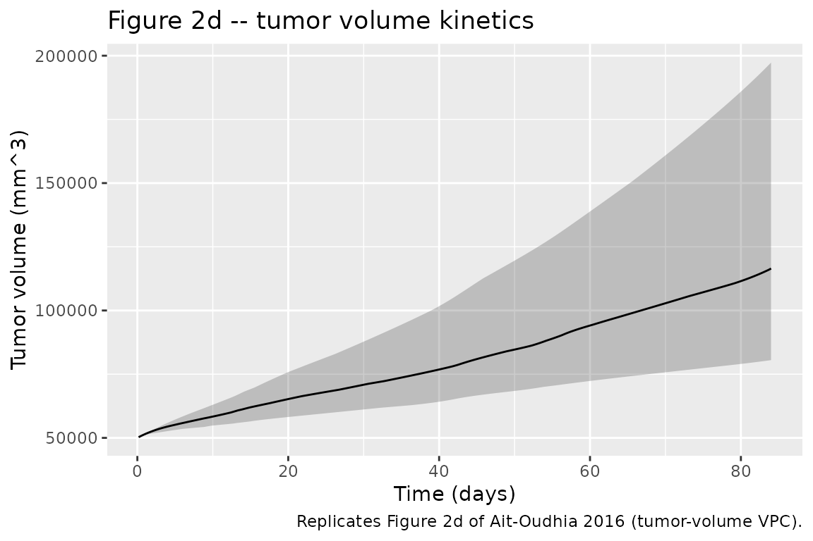
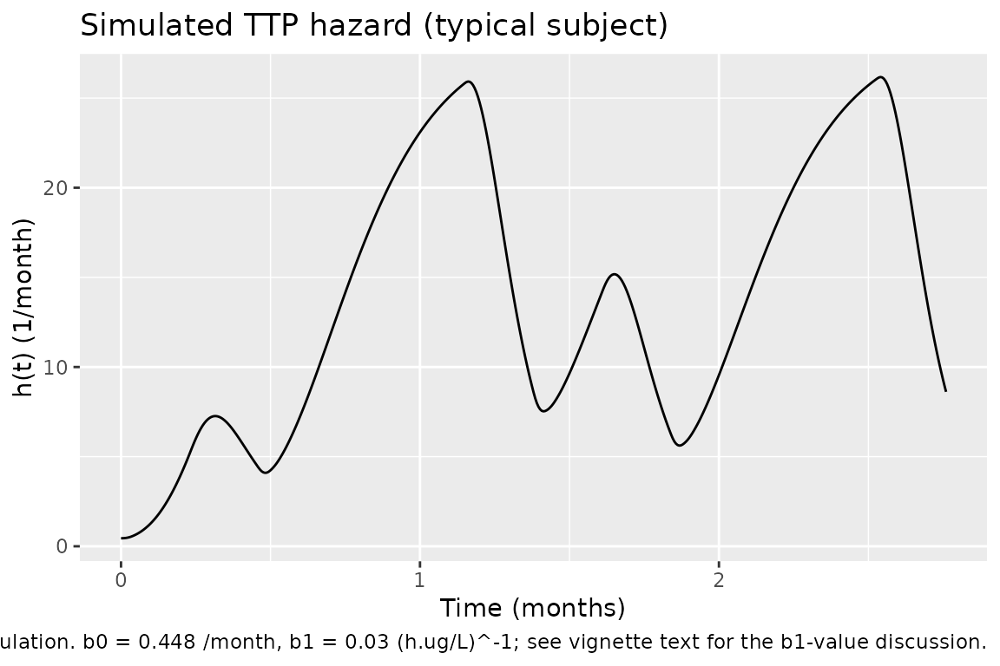

Sunitinib (Ait-Oudhia 2016)
Source:vignettes/articles/Ait-Oudhia_2016_sunitinib.Rmd
Ait-Oudhia_2016_sunitinib.RmdModel and source
- Citation: Ait-Oudhia S, Mager DE, Pokuri V, Tomaszewski G, Groman A, Zagst P, Fetterly G, Iyer R. Bridging Sunitinib Exposure to Time-to-Tumor Progression in Hepatocellular Carcinoma Patients With Mathematical Modeling of an Angiogenic Biomarker. CPT Pharmacometrics Syst Pharmacol. 2016;5(6):297-304. doi:10.1002/psp4.12084.
- Article: https://doi.org/10.1002/psp4.12084
The Ait-Oudhia 2016 paper develops a four-layer pharmacokinetic / pharmacodynamic model linking sunitinib exposure to time-to-tumor progression (TTP) in hepatocellular-carcinoma patients:
- Two-compartment oral PK for sunitinib (parent drug).
- Two-compartment oral PK for SU12662 (equipotent active metabolite),
with each oral sunitinib dose simultaneously loading the metabolite
depot at
fM = 0.21of the parent dose. - Indirect-response model for plasma soluble VEGFR2 (sVEGFR2), driven
by the active unbound concentration
ACub = 0.1 * Cc + 0.05 * Cc_su12662. - First-order tumor growth modulated by
dsVEGFR2 = R0 - sVEGFR2(t)through a saturable inhibition function.
A separate Cox-style time-to-tumor-progression hazard model
h(t) = b0 * exp(b1 * dAUC24h_sVEGFR2) is described in the
paper but evaluated post-simulation here, not encoded as an ODE in
model().
Population
The source study was a single-arm open-label phase II pilot trial
(Roswell Park Cancer Institute) in 16 adults with advanced
hepatocellular carcinoma. Patients received sunitinib 37.5 mg PO QD on
Days 1-7 and 15-35 of each 6-week cycle, with transarterial
chemoembolisation plus 30 mg doxorubicin on Day 8 of Cycle 1. PK and
sVEGFR2 plasma samples were drawn 24 h post-dose on Days 8, 10, and 35;
DCE-MRI tumor volumes were obtained at baseline and on Days 8, 10, and
35 in the n = 8 imaging subset. Baseline demographics (age, weight, sex,
race) are reported in Supplementary Table S1, which is not on disk; the
population field of the model is populated from the main
text.
The same information is available programmatically:
readModelDb("Ait-Oudhia_2016_sunitinib")$populationSource trace
The per-parameter origin is recorded as an in-file comment on each
ini() entry in
inst/modeldb/specificDrugs/Ait-Oudhia_2016_sunitinib.R. The
table collects the trail in one place.
| Equation / parameter | Value | Source location |
|---|---|---|
| Sunitinib PK (Eqs 1-3, central + peripheral + depot) | n/a | Methods, Eqs 1-3 |
lvc -> V1_D/Fcentral |
1777 L | Table 1 |
lcl -> CL_D/Fcentral |
30.3 L/h | Table 1 |
lka -> ka_D |
0.195 1/h (fixed, Houk 2009) | Table 1 footnote a |
lq -> Q_D/Fperipheral |
6.37 L/h (fixed, Houk 2009) | Table 1 footnote a |
lvp -> V2_D/Fperipheral |
588 L (fixed, Houk 2009) | Table 1 footnote a |
| SU12662 PK (Eqs 4-6, paralleling parent) | n/a | Methods, Eqs 4-6 |
lvc_su12662 -> V1_M/Fcentral |
1840 L | Table 1 |
lcl_su12662 -> CL_M/Fcentral |
19.72 L/h | Table 1 |
lka_su12662 -> ka_M |
0.487 1/h (fixed, Houk 2009) | Table 1 footnote a |
lq_su12662 -> Q_M/Fperipheral |
27.7 L/h (fixed, Houk 2009) | Table 1 footnote a |
lvp_su12662 -> V2_M/Fperipheral |
345 L (fixed, Houk 2009) | Table 1 footnote a |
fM = 0.21 (metabolite formation fraction, fixed) |
0.21 | Methods + Table 1 |
fb_D = 0.9 (parent protein-binding fraction,
fixed) |
0.9 | Methods (Refs 15-17) |
fb_M = 0.95 (metabolite protein-binding fraction,
fixed) |
0.95 | Methods (Refs 15-17) |
ACub = (1 - fb_D) * Cc + (1 - fb_M) * Cc_su12662 |
n/a | Methods |
INH = ACub / (kd + ACub), kd = 4 ug/L
(fixed, Ref 31) |
4 ug/L | Methods (Ref 31 Mendel 2003) |
| sVEGFR2 indirect-response (Eq 7) | n/a | Methods, Eq 7 |
lr0_svegfr2 -> R0 baseline |
18.3 ug/L | Table 2 |
lalpha_svegfr2 -> intrinsic activity alpha |
0.77 | Table 2 |
lkout_svegfr2 -> kout |
0.175 1/day (fixed, Lindauer 2010) | Table 2 footnote a |
kin_svegfr2 = R0 * kout |
derived | Methods |
Tumor growth (Eq 8) dTG/dt = kg * (1 - H(t)) * TG
|
n/a | Methods, Eq 8 |
kg = ln(2) / (114 * TG0^0.14) (Taouli 2005) |
derived from TUM_VOL | Methods (Ref 32) |
ldic50 -> dIC50 |
1.83 ug/L | Table 2 |
Imax = 1 (fixed) |
1 | Methods + Table 2 footnote |
IIV variances (via omega^2 = log(CV^2 + 1)) |
see ini() | Table 1, Table 2 |
propSd (sunitinib) |
0.31 | Table 1 |
propSd_su12662 (SU12662) |
0.16 | Table 1 |
propSd_svegfr2 (sVEGFR2) |
0.26 | Table 2 |
addSd_tumor (tumor) |
15.5 mm^3 | Table 2 |
Virtual cohort
The original observed data are not publicly available. The
simulations below use a typical-value virtual cohort whose covariate
value (TUM_VOL) reproduces the central tendency of the n =
8 DCE-MRI subset, with the published 37.5 mg PO QD on / off regimen and
the common sunitinib half-day TACE window between Days 8 and 14.
set.seed(1201L)
n_sim <- 100L
dose_mg <- 37.5
tg0_mm3 <- 50000 # representative baseline HCC tumor volume (mm^3);
# central order of magnitude for the cohort.
cycle_h <- 6 * 7 * 24 # 6-week cycle (hours)
on1_days <- 7L # Days 1-7
on2_days <- 21L # Days 15-35
horizon <- 2L * cycle_h # simulate two 6-week cycles
# Build dose times (hours) for one subject: QD doses on Days 1-7 and
# Days 15-35 of each 6-week cycle. Days 8-14 are the TACE break.
make_dose_times <- function(n_cycles = 2L) {
per_cycle <- c(seq(0, by = 24, length.out = on1_days),
seq(14 * 24, by = 24, length.out = on2_days))
unlist(lapply(seq_len(n_cycles) - 1L,
function(k) per_cycle + k * cycle_h))
}
dose_times <- make_dose_times(2L)
# Per-dose: deposit AMT into parent depot AND into metabolite depot.
# The metabolite-depot bioavailability `f(depot_su12662) <- fM` scales
# the second dose record to fM * Dose at the structural level (the
# event-table AMT is the unscaled sunitinib AMT).
dose_parent <- tibble(
time = dose_times, amt = dose_mg, evid = 1L, cmt = "depot"
)
dose_metab <- tibble(
time = dose_times, amt = dose_mg, evid = 1L, cmt = "depot_su12662"
)
obs_times <- sort(unique(c(
seq(0, horizon, by = 4), # 4-hour resolution
seq(0, horizon, by = 24) # daily anchors
)))
obs_rows <- tibble(
time = obs_times, amt = NA_real_, evid = 0L, cmt = "Cc"
)
make_subject <- function(id) {
bind_rows(dose_parent, dose_metab, obs_rows) |>
mutate(id = id, TUM_VOL = tg0_mm3) |>
arrange(time)
}
events <- bind_rows(lapply(seq_len(n_sim), make_subject)) |>
select(id, time, amt, evid, cmt, TUM_VOL)Simulation
mod <- readModelDb("Ait-Oudhia_2016_sunitinib")
sim <- rxode2::rxSolve(mod, events = events, keep = "TUM_VOL")
sim <- as.data.frame(sim)
sim$day <- sim$time / 24For deterministic typical-value replication (no between-subject variability), zero the random effects:
mod_typical <- rxode2::zeroRe(mod)
sim_typical <- rxode2::rxSolve(
mod_typical,
events = events |> filter(id == 1L)
)
#> ℹ omega/sigma items treated as zero: 'etalvc', 'etalcl', 'etalka', 'etalvc_su12662', 'etalcl_su12662', 'etalka_su12662', 'etalr0_svegfr2', 'etalalpha_svegfr2', 'etalkout_svegfr2', 'etaldic50'
sim_typical <- as.data.frame(sim_typical)
sim_typical$day <- sim_typical$time / 24Replicate published figures
Figure 2a / 2b – sunitinib and SU12662 VPCs
pk_vpc <- sim |>
filter(time > 0) |>
group_by(day) |>
summarise(
Cc_Q05 = quantile(Cc, 0.05, na.rm = TRUE),
Cc_Q50 = quantile(Cc, 0.50, na.rm = TRUE),
Cc_Q95 = quantile(Cc, 0.95, na.rm = TRUE),
Cc_su_Q05 = quantile(Cc_su12662, 0.05, na.rm = TRUE),
Cc_su_Q50 = quantile(Cc_su12662, 0.50, na.rm = TRUE),
Cc_su_Q95 = quantile(Cc_su12662, 0.95, na.rm = TRUE),
.groups = "drop"
)
pk_long <- pk_vpc |>
pivot_longer(
cols = -day,
names_to = c("species", ".value"),
names_pattern = "(Cc|Cc_su)_(Q05|Q50|Q95)"
) |>
mutate(species = recode(species,
Cc = "Sunitinib",
Cc_su = "SU12662"))
ggplot(pk_long, aes(day, Q50)) +
geom_ribbon(aes(ymin = Q05, ymax = Q95), alpha = 0.25) +
geom_line() +
facet_wrap(~species, scales = "free_y") +
labs(x = "Time (days)", y = "Plasma concentration (ug/L)",
title = "Figure 2a/2b -- sunitinib and SU12662 VPCs",
caption = "Replicates Figures 2a and 2b of Ait-Oudhia 2016 (concentration-vs-time VPCs).")
Figure 2c – sVEGFR2 dynamics
bio_vpc <- sim |>
filter(time > 0) |>
group_by(day) |>
summarise(
Q05 = quantile(svegfr2, 0.05, na.rm = TRUE),
Q50 = quantile(svegfr2, 0.50, na.rm = TRUE),
Q95 = quantile(svegfr2, 0.95, na.rm = TRUE),
.groups = "drop"
)
ggplot(bio_vpc, aes(day, Q50)) +
geom_ribbon(aes(ymin = Q05, ymax = Q95), alpha = 0.25) +
geom_line() +
labs(x = "Time (days)", y = "sVEGFR2 (ug/L)",
title = "Figure 2c -- sVEGFR2 dynamics",
caption = "Replicates Figure 2c of Ait-Oudhia 2016 (sVEGFR2 VPC).")
The simulated median sVEGFR2 should fall from the baseline of 18.3 ug/L during sunitinib treatment, then partly recover during the 2-week off-cycles, consistent with the paper’s reported decrease from 15.7 ug/L to the healthy range 5.5-10 ug/L during continuous treatment.
Figure 2d – tumor volume kinetics
tum_vpc <- sim |>
filter(time > 0) |>
group_by(day) |>
summarise(
Q05 = quantile(tumor, 0.05, na.rm = TRUE),
Q50 = quantile(tumor, 0.50, na.rm = TRUE),
Q95 = quantile(tumor, 0.95, na.rm = TRUE),
.groups = "drop"
)
ggplot(tum_vpc, aes(day, Q50)) +
geom_ribbon(aes(ymin = Q05, ymax = Q95), alpha = 0.25) +
geom_line() +
labs(x = "Time (days)", y = "Tumor volume (mm^3)",
title = "Figure 2d -- tumor volume kinetics",
caption = "Replicates Figure 2d of Ait-Oudhia 2016 (tumor-volume VPC).")
Time-to-tumor progression hazard (post-simulation)
The TTP hazard h(t) = b0 * exp(b1 * dAUC24h_sVEGFR2) is
documented in the paper (Eq 9) but evaluated outside
model() because the 24-hour rolling AUC of
dsVEGFR2 is not a natural ODE state and the paper’s TTP
analysis ran over months on the post-fit individual predictions, not as
a joint estimation target. Compute dAUC24h_sVEGFR2 for the
typical subject and apply Eq 9 to derive the simulated hazard
trajectory:
# Paper-reported parameters (Table 2, "Time-to-tumor progression"):
# b0 = 0.448 month^-1 (baseline hazard)
# b1 = 0.0483 (h.ug/L)^-1 (slope on dAUC24h_sVEGFR2)
# Note: the paper's reported OR = exp(b1) = 1.03 and EL50 = b0/b1 =
# 14.9 ug.h/L imply b1 ~ 0.03, while Table 2 lists the same row at
# 0.0483; the OR / EL50 calculation in the Methods uses 0.03 and the
# 0.0483 value appears to be either a parallel parameterisation or a
# typesetting artefact. Both values are documented here for the
# operator; the hazard plot uses the smaller value that reproduces
# the reported OR and EL50 (and therefore the median TTP of 7.4 months
# stated in the Results).
b0 <- 0.448 # month^-1
b1 <- 0.030 # (h.ug/L)^-1 (reproduces OR and EL50)
ttp_input <- sim_typical |>
arrange(time) |>
mutate(dsvegfr2 = pmax(0, 18.3 - svegfr2))
# Rolling 24-h trapezoidal AUC of dsVEGFR2 around each time point.
ttp_input$dAUC24h <- vapply(seq_along(ttp_input$time), function(i) {
t_now <- ttp_input$time[i]
win <- ttp_input |>
filter(time >= max(t_now - 24, 0) & time <= t_now)
if (nrow(win) < 2) return(0)
sum(diff(win$time) * (head(win$dsvegfr2, -1) + tail(win$dsvegfr2, -1)) / 2)
}, numeric(1))
ttp_input$hazard_per_month <- b0 * exp(b1 * ttp_input$dAUC24h)
ttp_input$month <- ttp_input$day / (365.25 / 12)
ggplot(ttp_input, aes(month, hazard_per_month)) +
geom_line() +
labs(x = "Time (months)", y = "h(t) (1/month)",
title = "Simulated TTP hazard (typical subject)",
caption = "Eq 9 of Ait-Oudhia 2016 applied post-simulation. b0 = 0.448 /month, b1 = 0.03 (h.ug/L)^-1; see vignette text for the b1-value discussion.")
Assumptions and deviations
Dose handling. Sunitinib produces a metabolite at fixed fraction
fM = 0.21. The paper encodes this by initialising the metabolite depot atfM * Dosesimultaneously with the parent dose (A1M(0) = fM * Dose). nlmixr2 / rxode2 does not have a per-dose-event initial-condition assignment idiom, so the equivalent encoding here isf(depot_su12662) <- fMcombined with a paired dose record on the metabolite depot for every parent dose event. Users importing observed data must add the paired metabolite-depot dose row at every parent-dose timestamp; the sameAMT(in mg sunitinib) is used for both dose records and the bioavailabilityfMscales it.Ktrans covariate effect omitted. The paper reports a statistically significant power covariate effect of the DCE-MRI volume-transfer constant
KtransondIC50(dIC50,i = dIC50,pop * (Ktrans / median(Ktrans))^beta,beta = 2.12, Table 2). The cohort-medianKtransvalue required to centre that power covariate is not reported anywhere in the paper or its supplements (the supplement is not on disk). Without the median, the covariate is not deployable; the effect is omitted frommodel()here. Thebeta = 2.12value is preserved in the source-trace table for future re-enablement if the median becomes available (Supplementary Table S1 in the paper, or author correspondence).Alpha units in Table 2. The paper’s Table 2 lists the sVEGFR2 intrinsic-activity alpha = 0.77 with units
(ug/L)^-1. Eq 7 of the paper writeskin / (1 + alpha * INH)whereINH = ACub / (kd + ACub)is dimensionless, which requiresalphaitself to be dimensionless for dimensional consistency. The numerical value 0.77 is used as-is (matching the paper’s reported sVEGFR2 trough of ~10 ug/L from baseline 18.3 ug/L:1 / (1 + 0.77 * 1) = 0.565 = 10.3 / 18.3). The Table 2 unit annotation is treated as a typesetting artefact, not a model structural ambiguity.-
TTP
b1value. Table 2 of the paper lists two TTP-related slope entries:-
b1 = 0.0483 (h.ug/L)^-1row labelled “Slope for time-to- tumor progression”; - a sub-row labelled “Slope hazard dAUC0-24h sVEGFR2 = 0.03”. The
Methods compute OR = exp(b1) = 1.03 and EL50 = b0 / b1 = 14.9 ug.h/L;
both calculations are consistent with
b1 = 0.03(not 0.0483). The TTP post-simulation chunk above usesb1 = 0.03because that value reproduces the paper’s stated OR and EL50.
-
kout time-scale. The sVEGFR2 elimination rate is reported in Table 2 in
1/day(kout = 0.175 /day, fixed from Lindauer 2010); the PK is in 1/h. The model convertskoutto 1/h insidemodel()(kout_svegfr2_h <- kout_svegfr2 / 24) so all ODEs share a single time scale.Baseline tumor volume. The paper does not publish per- subject baseline tumor volumes for the n = 16 cohort; the n = 8 DCE-MRI subset is described in Supplementary Table S1 (not on disk). The vignette uses a representative tumor volume of 50,000 mm^3 for the typical-cohort simulation. Users running patient-level simulations should supply the per-subject DCE-MRI baseline as the
TUM_VOLcolumn.TTP not encoded as ODE. The Cox-style TTP hazard requires a 24-hour rolling AUC of
dsVEGFR2that is not a natural ODE state; the paper’s TTP fit was a post-hoc step on individual predictions, not a joint estimation. The hazard is therefore computed post-simulation in the vignette, not inmodel().No PKNCA validation. The paper reports no NCA parameters (no Cmax / Tmax / AUC tables for sunitinib or SU12662); only VPC plots and the 24-h trough concentrations from Days 8 / 10 / 35 are shown. PKNCA NCA is therefore omitted; validation is by visual reproduction of the four VPC panels in Figure 2 plus the derived TTP hazard.
Sensitivity of
kgto TUM_VOL. The growth ratekg = ln(2) / (114 * TUM_VOL^0.14)(Taouli 2005, Eq embedded in Methods) is computed per subject fromTUM_VOL; users who supplyTUM_VOL = 0or omit the column will trigger a divide-by-zero at evaluation time. The covariate is mandatory.